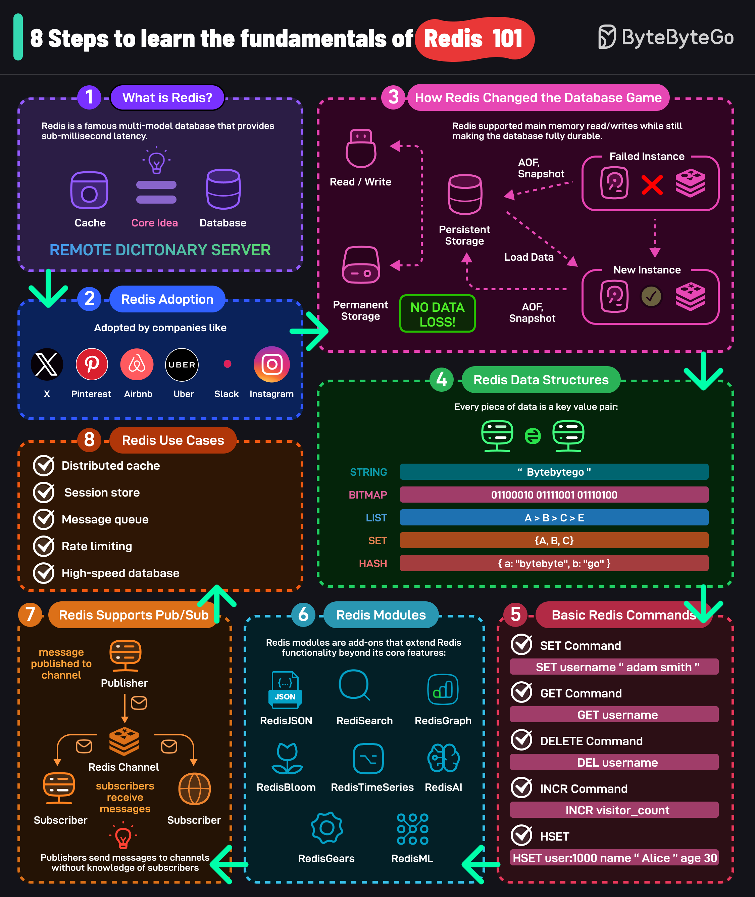

Redis is one of the most popular data stores in the world and is packed with features.
Here are 8 simple steps that can help you understand the fundamentals of Redis.
Redis (Remote Dictionary Server) is a multi-modal database that provides sub-millisecond latency. The core idea behind Redis is that a cache can also act as a full-fledged database.
High-traffic internet websites like Airbnb, Uber, Slack, and many others have adopted Redis in their technology stack.
Redis supports main memory read/writes while still supporting fully durable storage. Read and writes are served from the main memory but the data is also persisted to the disk. This is done using snapshots (RDB) and AOF.
Redis stores data in key-value format. It supports various data structures such as strings, bitmaps, lists, sets, sorted sets, hash, JSON, etc.
Some of the most used Redis commands are SET, GET, DELETE, INCR, HSET, etc. There are many more commands available.
Redis modules are add-ons that extend Redis functionality beyond its core features. Some prominent modules are RediSearch, RedisJSON, RedisGraph, RedisBloom, RedisAI, RedisTimeSeries, RedisGears, RedisML, and so on.
Redis also supports even-driven architecture using a publish-subscribe communication model.
Top Redis use cases are Distributed Caching, Session Storage, Message Queue, Rate Limiting, High-Speed Database, etc.